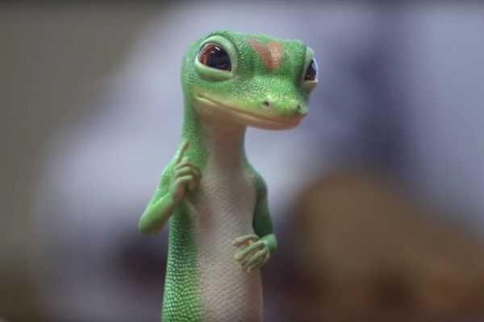

My Awesome Gecko
Geckos are small, mostly carnivorous lizards that have a wide distribution, found on every continent except Antarctica. belonging to the infraorder Gekkota, found in warm climates throughout the world. They range from 1.6 to 60 cm (0.64 to 24 inches). Geckos are unique among lizards for their vocalizations, which differ from species to species. Most geckos in the family Gekkonidae use chirping or clicking sounds in their social interactions. Tokay geckos (Gekko gecko) are known for their loud mating calls, and some other species are capable of making hissing noises when alarmed or threatened. They are the most species-rich group of lizards, with about 1,500 different species worldwide.[2] The New Latin gekko and English "gecko" stem from the Indonesian-Malay gēkoq, which is imitative of sounds that some species make.[3] All geckos except species in the family Eublepharidae lack eyelids; instead, the outer surface of the eyeball has a transparent membrane, the cornea. They have a fixed lens within each iris that enlarges in darkness to let in more light. Carp's barking gecko licking its cornea to clear it of dust A Mediterranean house gecko in ambush on a nest of the sphecid wasp Sceliphron spirifex. Since they cannot blink, species without eyelids generally lick their own corneas when they need to clear them of dust and dirt, in order to keep them clean and moist.[4] Nocturnal species have excellent night vision; their color vision in low light is 350 times more sensitive than human color vision.[5] The nocturnal geckos evolved from diurnal species, which had lost the eye rods. The gecko eye, therefore, modified its cones that increased in size into different types, both single and double. Three different photopigments have been retained and are sensitive to UV, blue, and green. They also use a multifocal optical system that allows them to generate a sharp image for at least two different depths.[6][7] While most gecko species are nocturnal, some species are diurnal and active during the day, which has evolved multiple times independently.[8]